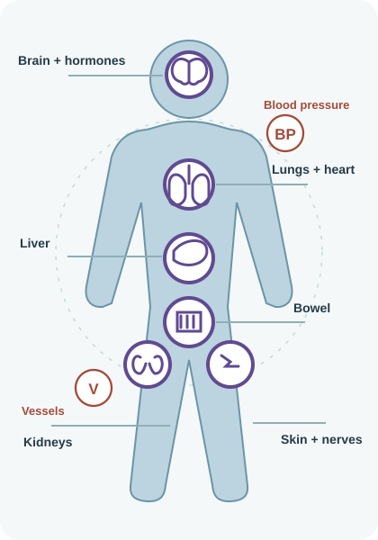

Part of this regimen. Your team will explain the dose, route and role in your treatment.
01 / treatment identity
What this treatment is doing
For adults with locally advanced or early-stage triple-negative breast cancer at high risk of recurrence when this NCCP regimen is appropriate.
Part of this regimen. Your team will explain the dose, route and role in your treatment.
Part of this regimen. Your team will explain the dose, route and role in your treatment.
Regimen-specific point
This is a multi-phase regimen. The medicines and side-effect emphasis change after cycle 4 and again after surgery.
This is a multi-phase regimen. The medicines and side-effect emphasis change after cycle 4 and again after surgery.
02 / treatment journey
How the schedule fits together
Every 21 days: pembrolizumab + carboplatin on day 1; paclitaxel on days 1, 8 and 15.
Every 21 days: pembrolizumab + doxorubicin + cyclophosphamide on day 1.
Definitive breast surgery follows the neoadjuvant phase when clinically appropriate.
Pembrolizumab continues after surgery: 200 mg every 21 days for 9 cycles or 400 mg every 42 days for 5 cycles, according to the treatment plan.
Bloods and toxicity review guide whether treatment is given, delayed or modified.
A delay, dose change or omitted medicine can be appropriate. Your team should explain what changed and why.
03 / visual side-effect guide
Where changes may appear
This larger body map is a memory aid. The cards below are separated by the medicines or treatment phase that make each risk relevant. A picture cannot diagnose the cause of a symptom: report new or worsening changes to your oncology team.

Pembrolizumab - immune effects
New cough or breathlessness needs prompt assessment.
Persistent diarrhoea, abdominal pain, jaundice or dark urine can signal immune inflammation.
Marked fatigue, dizziness, headache, thirst or excess urination can reflect hormone or glucose disturbance.
Spreading rash, blistering, reduced urine, weakness, numbness or visual change needs assessment.
Paclitaxel + carboplatin phase
New tingling, numbness, burning pain or difficulty with fine tasks should be reported.
Flushing, rash, wheeze, swelling or dizziness during infusion needs immediate assessment.
Fever, shivering, bleeding or sudden illness needs prompt oncology contact.
Doxorubicin + cyclophosphamide phase
New chest pain, breathlessness, swelling or palpitations needs assessment.
Doxorubicin can temporarily redden urine; painful urination or visible blood should still be reported.
Mouth ulcers, vomiting despite medicines, fever or bleeding should be reported promptly.
This is a regimen-specific safety summary, not an exhaustive adverse-effect list. Follow the current treatment plan, medicine leaflets and your oncology team’s SOS instructions.
04 / monitoring and support
What helps make treatment safer
Before and during treatment
- Blood count, kidney/liver profile and glucose are checked regularly; thyroid testing is repeated during pembrolizumab treatment.
- Paclitaxel requires premedication according to the regimen/local protocol.
- Cardiac assessment may be required before the doxorubicin phase.
Bring to each review
- Your current medicines, including non-prescription products.
- A note of new symptoms, when they started and what they stopped you doing.
- Any temperature, blood-pressure or bowel-count readings your team asked you to record.
- Questions about the purpose of treatment, scan/review timing or changes to the plan.
05 / when to call
Do not wait for the next appointment
Use your oncology SOS instructionsCall oncology urgently for fever, new breathlessness, persistent diarrhoea, jaundice, severe rash, significant bleeding, severe weakness or a new neurological symptom. For severe breathing difficulty, chest pain, collapse or seizure call 112/999.
If your team has given you different local thresholds or emergency instructions, follow those instructions.
06 / treatment passport
Bring the pattern, not just the symptom
My treatment purpose
My next treatment/review
My oncology SOS number
Immune organs
Blood + infection
Nerves
Heart
Mouth + gut
Skin + nails
Write dates, counts or readings where possible. A blank space means not recorded, not “no symptom”.
07 / source traceability
Check the source
Official NCCP 00857 v3 — open NCCP/HSE source ↗
General HSE chemotherapy safety information — open HSE guidance ↗
Clinical-review prototype. This page supports discussion and does not replace the current NCCP regimen, the formal consent process, prescribing review, pharmacy verification or individual clinical judgement.